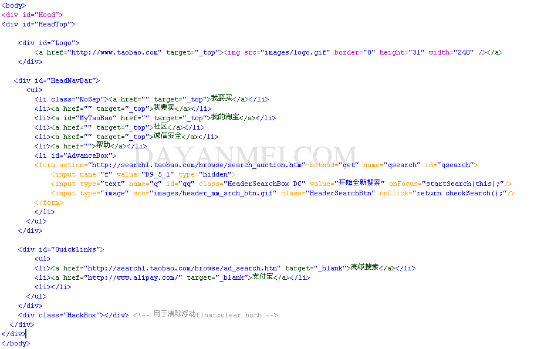

div+css布局实例淘宝分析(一)
对于刚入门学DIV,CSS布局的朋友来说,不知道从那里下手,我以为从分析优秀网站的源代码来学习div,css布局是一个不错的方法,这篇div+ css布局教程是我自己在边分析边学习中总结出来的,如果你要转载请注明出处,另外本人特别声明:本教程只是分析淘宝网站的HTML,CSS源代码,作为 一个教程的例子,达到学习DIV+CSS排版的效果,请勿模仿淘宝,或者仿照淘宝制作网站,谢谢,这是第一篇,淘宝顶部排版方式 http://www.dayanmei.com/upload/1.top.default.gif http://www.dayanmei.com/upload/1.top.view.gif
我们看看原始图片
通过观察,我们把它分为如下图所示块
具体的HTML,DIV+CSS排版样式为

http://www.dayanmei.com/upload/1.top.html.gif
我们一行一行分析,
1.全部的代码均在一个DIV容器(我暂时这样称呼) Head里面,我们来看看Head的写法
#Head{
text-align:center;
}
为什么Head前面有一个"#"号呢?
而有的却是在前面加一个"．"比如 "．Head",有时候写css的时候干脆什么也不加,比如 td,body,他们有什么区别,具体怎么用,如果仔细你就会发现在HTML代码的DIV容器里面,有的是 <div id="Head"></div> 而有的是这样 <div class="HackBox"></div>
从id和class字面上的意思,我们也已经了解了,id具有唯一性,而class是一个类,适用于可多次重复使用的容器,而前面什么也不带的,便是 CSS里默认的通用于HTML代码的描叙,即对HTML里的代码起全局作用,比如 td,便是对HTML表格里面的全部列起作用,text-align:center是指在此容器里面的文字全部居中对齐,我们注意到,行后面还有一个分号 ";",
语法 text-align : left | right | center | justify
取值说明：
left : 默认值。左对齐
right : 右对齐
center : 居中对齐
justify : 两端对齐
2.HeadTop
#Head #HeadTop{
position:relative;
width:760px;
margin:10px auto 10px;
text-align:left;
}
为什么#HeadTop前面会有一个#Head?
我们发现#headTop是嵌套在#Head里面的,为了Head里面的设置在HeadTop里面同样生效,将HeadTop放在了Head后面
position : static | absolute | fixed | relative
取值：
static : 默认值。无特殊定位，对象遵循HTML定位规则
absolute : 将对象从文档流中拖出，使用 left ， right ， top ， bottom 等属性相对于其最接近的一个最有定位设置的父对象进行绝对定位。如果不存在这样的父对象，则依据 body 对象。而其层叠通过 z-index 属性定义
fixed :未支持。对象定位遵从绝对(absolute)方式。但是要遵守一些规范
relative :对象不可层叠，但将依据 left ， right ， top ， bottom 等属性在正常文档流中偏移位置.h.space.gif)
http://www.dayanmei.com/images/space.gif
width : auto | length
auto : 默认值。无特殊定位，根据HTML定位规则分配
length : 由浮点数字和单位标识符组成的长度值 | 百分数。百分数是基于父对象的宽度。不可为负数。 可以用相对长度象素单位px或者绝对长度in等做单位(1in = 2.54cm = 25.4 mm = 72pt = 6pc)
margin:10px auto 10px;
检索或设置对象四边的外补丁
如果提供全部四个参数值，将按上－右－下－左(顺时针方向)的顺序作用于四边。如果只提供一个，将用于全部的四边。如果提供两个，第一个用于上－下，第二个用于左－右。如果提供三个，第一个用于上，第二个用于左－右，第三个用于下。
text-align:left;
我们看到Head里面已经有设置文字对齐是居中的了,而这里又定义文字居左,那么到底文字怎么对齐呢?如果有相冲突的定义,CSS将按最近的一个定义来执 行,这跟HTML中的是一样的,比如<font color=red><font color=green>我到底是什么颜色?</font></font>
http://www.dayanmei.com/images/space.gif
3.
#Head #Logo{
width: 240px;
height: 31px;
float: left;
margin-left: 2px;
}
width(宽度),height(高度)都不说了
float : none | left | right
取值：
none : 默认值。对象不飘浮
left : 文本流向对象的右边
right : 文本流向对象的左边
翻译为漂浮,left说明是从左开始排列
margin-left: 2px; 相当于 maign:0px;0px;0px;2px
这里Logo容器说明的是,从左开始排列,宽度为240px,高度为31px,左补丁(左边空余)2px宽
4.HeadNavBar左边导航条
#Head #HeadNavBar{
float:right;
clear:right;
background: url(images/header_mm_bk.gif) left top no-repeat;
width:510px;
}
clear:right;清除右浮动,说明右边不能再有容器
clear : none | left | right | both
background: url(images/header_mm_bk.gif) left top no-repeat;
(意思是背景图片左,上对齐,不重复)
background : background-color || background-image || background-repeat || background-attachment || background-position
background-color:silver; 背景色
background-image:url(http://www.dayanmei.com/images/space.gif);
当同时存在背景图片和背景色时背景色将被覆盖
background-repeat : repeat | no-repeat | repeat-x | repeat-y
取值：
repeat : 默认值。背景图像在纵向和横向上平铺
no-repeat : 背景图像不平铺
repeat-x : 背景图像仅在横向上平铺
repeat-y : 背景图像仅在纵向上平铺
background-attachment : scroll | fixed
取值：
scroll : 默认值。背景图像是随对象内容滚动
fixed : 背景图像固定
background-position : length || length
background-position : position || position
取值：
length : 百分数 | 由浮点数字和单位标识符组成的长度值。
position : top | center | bottom | left | center | right
整句的意思是宽度为510px象素的容器从右往左排列
5.
#Head ul{
list-style-type:none;
margin:0;
padding:0;
}
list-style-type:none;
list-style : list-style-image || list-style-position || list-style-type
list-style-image : url ( url );可以将列表样式改变为图片
list-style-type : disc | circle | square | decimal | lower-roman | upper-roman | lower-alpha | upper-alpha | none
取值：可以将列表改变为其他样式
disc : CSS1 默认值。实心圆
circle : CSS1 空心圆
square : CSS1 实心方块
decimal : CSS1 阿拉伯数字
lower-roman : CSS1 小写罗马数字
upper-roman : CSS1 大写罗马数字
lower-alpha : CSS1 小写英文字母
upper-alpha : CSS1 大写英文字母
none : CSS1 不使用项目符号
6.
#Head #HeadNavBar li{
float:left;
height:31px;
background: url(images/header_mm_sep.gif) left center no-repeat;
display:inline;
}
display:inline; 内联对象的默认值。将对象强制作为内联对象呈递，从对象中删除行(显示在行内,超出的将不显示)
display : block | none | inline | inline-block
7.
#Head #HeadNavBar li.NoSep{
background: none;
margin-left: 5px;
}
当列表区块内标志类为NoSep时,没有背景色"background: url(images/header_mm_sep.gif) left center no-repeat;",并且左补丁为5px
8.#MyTaoBao {
padding-left: 14px!important;
margin-left: 9px!important;
margin-left: 4px;
background:transparent url(images/header_mm_mytb_icon.gif) no-repeat left center;
}
padding:lenth;内补丁,用法参考margin,
padding-left: 14px;是指左边空余14px的值,这空余是用来放置居左中的背景图片的
!important;提升指定样式规则的应用优先权。
9.设置列表内的链接样式
#Head #HeadNavBar li a{
display:block;
padding: 0 6px 0 7px;
float:left;
height:31px;
line-height:31px;
color: #0f3a66;
font-size: 13px;
}
display:block; 以块状呈现
padding: 0 6px 0 7px;左右内补丁各为7px,6px
color: #0f3a66;链接时文字颜色为#0f3a66;
链接的完整定义还可以包含背景颜色background,链接样式text-decoration(text-decoration : none[无装饰] || underline[下划线] || blink[文字闪烁] || overline[上划线] || line-through[贯穿线])
链接的顺序应该是这样的(LVHA)
a:link
a :visited
a :hover
a :active
#Head #HeadNavBar li a:hover{
color: #e60;
}
10.
#Head #HeadNavBar li#AdvanceBox {
background: none;
margin-left: 10px;
}
由于AdvanceBox是在块li里面,故顺序为#Head #HeadNavBar li#AdvanceBox,这句意思是无背景,左外补丁(左空余)为10px;
11.为#AdvanceBox内的其他表单元素定义
#Head #HeadNavBar li#AdvanceBox form {
margin:0;
padding:0;
margin-left:8px;
margin-top:5px;
}
#Head #HeadNavBar li#AdvanceBox .HeaderSearchBox {
display:block;
float:left;
width:112px;
height:15px!important;
height /*ie55*/: 21px;
padding:3px 2px 1px 2px;
padding-right:0;
border: 1px solid #7ad2ff;
background:url(images/header_mm_srch_bk.png) no-repeat;
color: #000;
}
#Head #HeadNavBar li#AdvanceBox input.DC {
color: #90B1C5 !important;
}
#Head #HeadNavBar li#AdvanceBox .HeaderSearchBtn {
display:block;
float:left;
margin-left /*ie55*/: -3px;
}
#Head #HeadNavBar li#AdvanceBox li {
background: none!important;
}
12.#QuickLinks
#Head #QuickLinks{
float:right;
width:750px;
margin-top:6px;
margin-right:6px;
}
右浮动,宽度为750px,上,右补丁各为6px
13.为#Head #QuickLinks定义列表li样式
#Head #QuickLinks li{
float: right;
margin-left:10px;
line-height:21px;
}
line-height:21px; 行高21px;
14.定义#Head #QuickLinks li内链接样式,多个相同的定义时可以用","分割开,而且路径要写完整
#Head #QuickLinks li a:link, #Head #QuickLinks li a:visited {
font-style:normal;
font-weight:normal;
font-size: 12px;
color:#04d;
}
#Head #QuickLinks li a:hover, #Head #QuickLinks li a:active {
color:#e60;
}
15.
.HackBox{
border-top:1px solid transparent !important;
border-top:0;
clear:both;
}
这里有两个重复定义的border-top(上边框,!important优先,边框为1px,透明
clear:both; 左右浮动均清除,类似换一行
淘宝头部导航已经基本分析完成,现在总结一下:
(1).容器div可以嵌套,比如 <div id="Head"><div id="Logo"></div></div>,嵌套时容器的写法:需要在前面加上容器的命名,如 #Head #Logo,我们发现,Logo虽然在容器"HeadTop"里面却不用写成 #Head #HeadTop #Logo,因为HeadTop并没有对Logo限制
(2).独特的容器名字前面加符号 "#",通用的前面加符号小句点"."
(3).容器的基本参数包括 外补丁 margin,内补丁 padding,宽度 width,背景 background,浮动 float,清除 clear,这几个参见参数的用法要熟记
(4).需要换行显示时用 clear:both;
(5).可以单独为某个容器定义链接样式, 顺序为 LVHA(a:link,a:visited,a:hover,a:active),链接样式的几个参数背景(background),内补丁 (padding)宽度(width)描述(text-decoration)文字颜色(color)等,可以设置链接以块状方式显示
其他未总结之处,请多看源码.
转载请注明出处:
http://www.dayanmei.com/blog.php/ID_536.htm